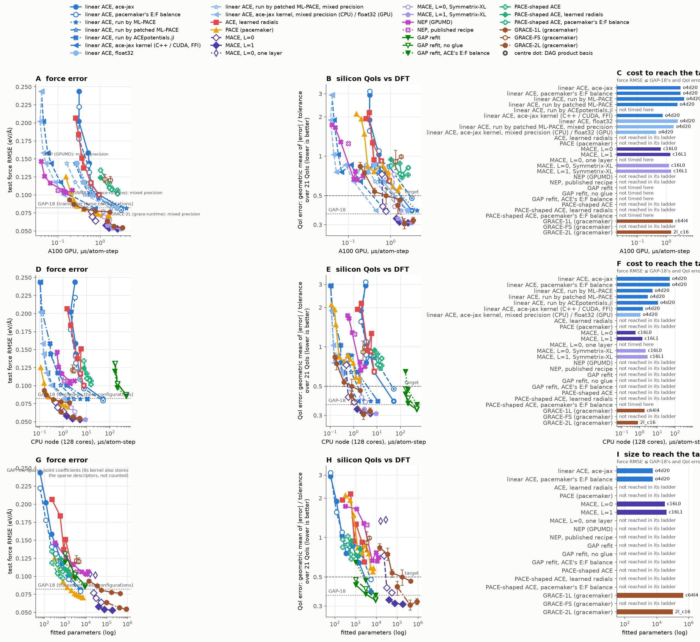
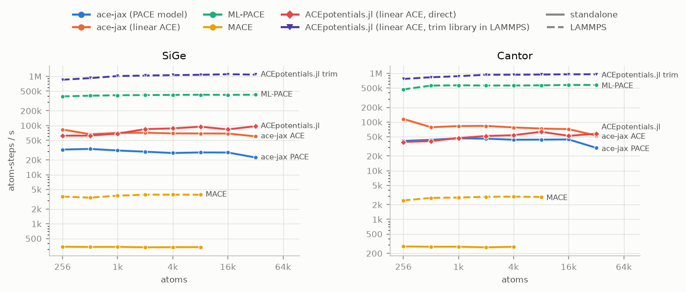
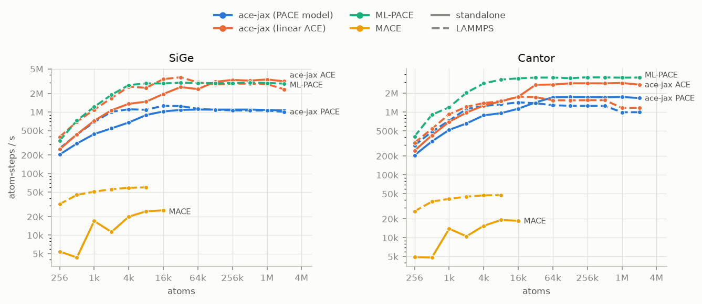
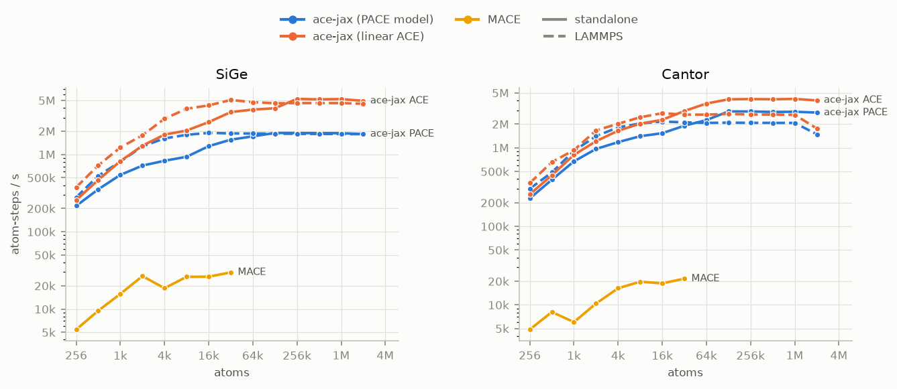

Performance¶
This page gives two benchmarks:
- Accuracy and cost on silicon. Fitted models of each family are compared at the same accuracy. The cost is the time per atom and MD step in LAMMPS.
- Speed on SiGe and Cantor. Models with random weights are compared at the same size. These figures compare speed only, not accuracy.
Accuracy and cost: silicon¶
All models are fitted to the same training set and tested on the same test set. The data is the GAP-18 silicon dataset (2,475 configurations: 2,227 for training and 248 for testing).
- Model families. Linear ACE (ace-jax), ACE with learned radials, PACE-shaped ACE, PACE (pacemaker), MACE with L = 0 and L = 1, NEP (trained with GPUMD), GAP refits, and GRACE-1L, GRACE-2L and GRACE-FS (trained with gracemaker). Each family has a ladder of model sizes. Each point is one fit. For GRACE, each point is the mean of three fits, and the bars show the range.
- Force error. The root-mean-square force error on the test set.
- QoI error. 21 silicon properties are calculated with each model and compared with DFT: elastic constants, energies of other phases, point defects, surface and stacking-fault energies, decohesion stress and phonons. Each error is divided by a tolerance. The QoI error is the geometric mean of these values (lower is better).
- Target. A model reaches the target if its force error is not more than the force error of GAP-18, and its QoI error is not more than 0.5.
- Cost. Microseconds per atom per MD step, in LAMMPS, in float64. Each model uses the fastest code that agrees with the reference evaluation. NEP on the GPU, GRACE-1L and GRACE-2L are in mixed precision, because their fastest codes have no float64 mode.

The figure shows the force error and the QoI error of each family. The lowest row compares the number of fitted parameters, not the cost. At first, the figure shows only the main families. To change the families that the figure shows:
- Click a family in the legend to show or hide it in all panels.
- Double-click a family to show only that family.
- Click a button above the legend to show a group of families.
- Put the pointer on a point to show its model, its values and the code that was timed.
The table gives the cheapest model of each family that reaches the target.
At the target, in microseconds per atom-step:
| model | A100 GPU | CPU node (128 cores) |
|---|---|---|
| linear ACE o4d20, ace-jax with lammps-jax (XLA program) | 3.12 | 50.5 |
| linear ACE o4d20, ace-jax kernel with lammps-jax (CUDA on the GPU, C++ on the CPU) | 0.75 | 1.52 |
| linear ACE o4d20, ace-jax kernel in reduced precision (float32 on the GPU, mixed precision on the CPU) | 0.44 | 1.13 |
| linear ACE o4d20, ML-PACE | 4.13 | 5.31 |
| linear ACE o4d20, ACEpotentials.jl | – | 10.8 |
| MACE c16L0, Symmetrix 0.3.0 | 0.65 | 0.59 |
| MACE c16L0, Symmetrix-XL | 1.23 | 2.19 |
| MACE c16L1, Symmetrix 0.3.0 | 1.37 | 1.43 |
| MACE c16L1, Symmetrix-XL | 1.47 | 2.87 |
| GRACE-1L c64l4, grace-runtime (mixed precision) | 1.68 | 1.88 |
| GRACE-2L 2l_c16, grace-runtime (mixed precision) | 1.47 | 0.81 |
MACE c16L0 in Symmetrix 0.3.0 has the lowest cost at the target, on the A100 and on the CPU. Symmetrix 0.3.0 is 3 to 4 times faster than the earlier Symmetrix version for these MACE models. On the A100, it is 1.9 times faster than the ace-jax GPU kernel at the target.
In these ladders, PACE (pacemaker), ACE with learned radials, PACE-shaped ACE, NEP, the GAP refits and GRACE-FS do not reach the target. GRACE-1L reaches the target only at its largest size (c64l4, 445,793 parameters). At that size, its cost is approximately 3 times the cost of MACE c16L0. GRACE-2L has two message-passing layers. It reaches the target at all of its sizes. Its smallest size (2l_c16, 98,882 parameters) costs approximately 1.4 (CPU) to 2.3 (A100) times the cost of MACE c16L0. On the CPU, it costs less than linear ACE o4d20 in the ace-jax kernel. GRACE-2L 2l_small has a QoI error of 0.31, the same as the largest MACE L = 1 models. PACE reaches the force error of GAP-18 with fewer parameters than linear ACE, but not the QoI target. NEP has the lowest cost on the A100 (0.04 to 0.22 µs/atom-step), in mixed precision. On the CPU, NEP costs 0.55 to 3.0 µs/atom-step. PACE reaches the same force error on the CPU at a lower cost. PACE in grace-runtime is 2.1 to 2.8 times faster than ML-PACE on the CPU. On the A100, it has the same speed as ML-PACE up to f200, and it is 2.2 times faster at f3200. The smallest NEP force error is 0.103 eV/Å, and its smallest QoI error is 0.66. These force errors agree with the published NEP results for this dataset (approximately 0.1 eV/Å).
On the CPU, the ACEpotentials.jl compiled library is the fastest code for linear ACE up to o4d14. It has the same speed as ML-PACE at o4d16. At o4d20 it is 2 times slower than ML-PACE.
On the CPU, the ace-jax C++ kernel is 17 to 33 times faster than the compiled JAX program. At o4d20 it is 3.5 times faster than ML-PACE (1.52 against 5.31 µs/atom-step).
On the A100, ace-jax runs linear ACE o4d20 faster than ML-PACE (3.12 against 4.13 µs/atom-step). The ace-jax GPU kernel runs the same model at 0.75 µs/atom-step. It is the fastest linear ACE code on the A100 for all models from o3d8 to o4d20. Against patched ML-PACE, it is 2.9 to 3.7 times faster (o4d12 to o4d20). It is 4.8 to 8.2 times faster than the compiled JAX program. The speed-up is largest for the smallest models.
How the cost was measured¶
- GPU. One NVIDIA A100, 32,768 atoms.
- CPU. One node with two 64-core AMD EPYC 7742 CPUs, 4,096 atoms. All cores are used, with each MPI rank bound to a core. Each model uses its fastest layout, from 128 MPI ranks with 1 thread to 8 MPI ranks with 16 threads. GAP uses 32 MPI ranks.
- ace-jax runs in LAMMPS with lammps-jax, on the GPU and on the CPU.
ace-jax selects the form of the product basis for each model. Models with
4,000 or more chain-form multiplications per atom use the recursive (DAG)
form. The printed figure marks these points with a dot. In the
interactive figure, the code line of these points shows
dag:greedy. - Linear ACE, run by ML-PACE. The same linear ACE fits are written as
.yacefiles with tabulated radial functions (Write an ACE model as a .yace file). They run inpair_style pace(CPU) andpair_style pace/kk(GPU). - Linear ACE, run by ACEpotentials.jl. The same linear ACE fits are
converted to ACEpotentials.jl models. Each model is compiled to a shared
library with
juliac --trimand runs in LAMMPS with the ACEpotentials.jlpair_style aceplugin. These results are for the CPU only, with 128 MPI ranks. - ace-jax kernel. The same ace-jax bundles, with a kernel in place of the compiled JAX program. On the CPU, the C++ kernel runs with 128 MPI ranks and one thread for each rank. On the A100, the GPU kernel runs with one MPI rank.
- ace-jax kernel in reduced precision. The light-blue line with triangles is the same kernel with less precision. On the CPU, it uses mixed precision. The CPU line starts at o3d10: for o3d8, the energy error of mixed precision (0.6 meV for each atom) is more than the limit of the benchmark. Below o4d14, mixed precision is not faster than float64. On the A100, it runs float32 bundles. The accuracy that the figure shows is that of the float64 fit. These results are not included in the comparison with the float64 results of the other codes.
- ML-PACE on the GPU is the LAMMPS development version with the 2026
pace/kkGPU update. - MACE runs in LAMMPS with Symmetrix 0.3.0 (
pair_style symmetrix/mace) and, separately, with Symmetrix-XL. Symmetrix does not support the one-layer MACE models. - PACE (pacemaker) runs in LAMMPS with
pair_style pace/runtimefrom ICAMS grace-runtime 0.1.4, in float64. It reads the B-basis.yamlfile of pacemaker. Its radial functions are tables with 1,024 intervals. - GAP runs in LAMMPS with QUIP, on the CPU only.
- GRACE-1L and GRACE-2L run in LAMMPS with
pair_style grace/runtime(CPU) andgrace/runtime/kk(GPU) from ICAMS grace-runtime 0.1.4. grace-runtime calculates the neural network in float32 and the geometry and the sums in float64. The figure labels these points as mixed precision. They are 24 to 39 times faster on the CPU, and 6 to 16 times faster on the A100, than the float64 Kokkos styles of gracemaker's LAMMPS version. - GRACE-FS runs in LAMMPS with
grace/fs/kk(GPU) andgrace/fs(CPU), in float64. grace-runtime does not support GRACE-FS. - NEP is trained with GPUMD. On the CPU, it runs in LAMMPS with
pair_style nep(NEP_CPU, float64). On the GPU, it runs in GPUMD. GPUMD uses mixed precision, and the figure labels these points. - Before each timing, a short check compares the energies and forces in LAMMPS with the reference evaluation of the same model.
Note
ML-PACE reads tabulated radial functions only with an addition that is not yet in its releases (ML-PACE pull request 31). The "linear ACE, run by ML-PACE" results use a build of ML-PACE with that addition.
How the QoI error was calculated¶
- The reference is DFT (CASTEP), as for the training data.
- Each normalised error is limited to the range 0.05 to 10 before the geometric mean. Thus one very large or very small error does not control the result.
- The energy of compressed hcp silicon is not included. These structures are outside the training data, so the error measures extrapolation.
- Only models with all 21 QoIs calculated are shown.
- MACE with one layer, and Symmetrix MACE c64L1 on the GPU, have float32 timings only. They are not in the cost rows.
- The GAP parameter count includes only the sparse-point coefficients. The GAP kernel also keeps the sparse descriptors.
Speed: SiGe and Cantor¶
Each figure shows the throughput against the system size. The throughput is in atom-steps per second (atoms × evaluations per second; higher is better).
- Workload. The workload is similar to MD. Before each timed evaluation of energy and forces, each atom moves a small distance, as between two MD steps. The compilation time is not included.
- Models. The models are medium-size models with random weights.
Their cost is the same as the cost of a fitted model, but they do not
predict correctly:
- PACE
.yacemodels of approximately 500 basis functions for each element (ace-jax and ML-PACE evaluate the same files); - linear ACE models of approximately 450 basis functions for each element;
- MACE-MP-0b2 medium.
- PACE
- Standalone (solid lines) is a direct call of the evaluator, outside an MD engine. For ace-jax and MACE, this is one ASE calculator call from Python, including the neighbour list.
- LAMMPS (dashed lines) is the time of one MD step in LAMMPS: ace-jax
with lammps-jax (LAMMPS export), ML-PACE as
pair_style pace, MACE with Symmetrix. - Systems. SiGe, a random alloy on diamond, and Cantor, the equiatomic CrMnFeCoNi alloy on fcc.
CPU, float64¶

When these figures were made, lammps-jax supported only GPUs. Thus the CPU figure shows ace-jax standalone only. The silicon benchmark above includes ace-jax in LAMMPS on the CPU.
GPU, float64¶

GPU, float32¶

At 8,192 atoms¶
Atom-steps per second at 8,192 atoms. "—" shows that a code does not run in that setting, or ran out of memory at a smaller size.
| evaluator | mode | CPU, float64: SiGe | CPU, float64: Cantor | GPU, float64: SiGe | GPU, float64: Cantor | GPU, float32: SiGe | GPU, float32: Cantor |
|---|---|---|---|---|---|---|---|
| ace-jax (PACE model) | standalone | 28k | 43k | 892k | 961k | 932k | 1.40M |
| ace-jax (PACE model) | LAMMPS | — | — | 1.09M | 1.33M | 1.79M | 2.04M |
| ace-jax (linear ACE) | standalone | 69k | 73k | 1.47M | 1.48M | 2.04M | 2.03M |
| ace-jax (linear ACE) | LAMMPS | — | — | 2.47M | 1.49M | 3.90M | 2.45M |
| ML-PACE | LAMMPS | 423k | 567k | 2.91M | 3.30M | — | — |
| MACE | standalone | 336 | — | 24k | 19k | 26k | 20k |
| MACE | LAMMPS | 4k | 3k | 60k | 48k | — | — |
| ACEpotentials.jl (linear ACE, direct) | standalone | 95k | 63k | — | — | — | — |
| ACEpotentials.jl (linear ACE, trim library in LAMMPS) | LAMMPS | 1.08M | 944k | — | — | — | — |
Caveats¶
- CPU:
lestrade-cpu, Intel(R) Core(TM) i9-14900K: standalone with 16 threads, LAMMPS with 8 MPI ranks, on CPUs 0-15. - GPU:
sulis-a100, NVIDIA A100-PCIE-40GB. - ACEpotentials.jl standalone is one
energy_forcescall in Julia (neighbour list included), timed after a warm-up call. - ACEpotentials.jl (linear ACE, trim library in LAMMPS) evaluates the exact radial basis; the other ACE lines evaluate splined radials.
- ML-PACE runs only in float64, so it is absent from the float32 figure.
-
MACE in LAMMPS (Symmetrix) evaluates in double whatever the input, so it is shown in float64 only. A MACE line that stops early ran out of memory.
-
Random weights set the cost of a model, not its accuracy. Thus these numbers compare only speed. A fitted model of the same size has the same speed.
- ace-jax standalone uses its neighbour list again while the atoms stay in the skin. MACE standalone builds the list again at each call.
- The throughput depends on the model size, the cutoff and the number of neighbours. The full benchmarks include small and large models, peak memory and the largest system that fits in memory.
More¶
- Full benchmark results: every model size and host, memory, precision, parity checks and versions.
- How to rerun the benchmarks.